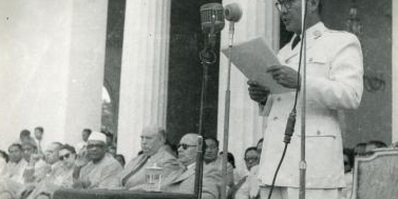
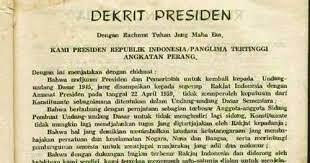
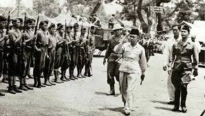

Penyerahan mandat sebagai Perdana Menteri RIS oleh Drs. Moh Hatta kepada Ir. Soekarno selaku Presiden RI merupakan akhirnya Republik Indonesia Serikat. Dari situ, pada tanggal 17 Agustus 1950, Indonesia kembali menjadi NKRI. Ir. Soekarno dan Moh Hatta kembali menjadi Presiden dan Wakil Presiden Indonesia. Tatanan kehidupan bangsa Indonesia masih dipengaruhi oleh sistem politik warisan kolonial Belanda. Pada saat itu, berlaku UUD 1949 yang kemudian digantikan oleh UUDS 1950 yang mencerminkan demokrasi liberal.
Setelah keluarnya dekrit Presiden 5 Juli 1959, pemerintah RI memberlakukan kembali UUD 1945. UUD 1945 tidak dilakukan secara murni dan konsekuen karena kehidupan politik telah didasarkan pada sistem demokrasi.

Pada tanggal 15 Juli 1946, Dr. H.J. van Mook menyelenggarakan konferensi di Malino, Sulawesi Selatan untuk membentuk negara-negara boneka agar RI dan negara-negara bagiannya dapat diadu-domba, mewujudkan politik kolonial Belanda yaitu divide et impera
Negara-negara boneka Belanda terdiri dari 6 negara bagian dan 9 satuan kenegaraan/daerah otonom :
- Negara Indonesia Timur (NIT)
- Negara Madura
- Negara Pasundan
- Negara Sumatera Timur
- Negara Sumatra Selatan
- Negara Jawa Timur
Adapun daerah otonom/istimewa ;
- Kalimantan Barat
- Kalimantan Timur
- Dayak Besar
- Banjar
- Kalimantan Tenggara
- Bangka
- Biliton (Belitung)
- Riau kepulauan
- Jawa Tengah
Negara boneka itu diwadahi dalam organisasi yang disebut Bijeenkomst voor Federal Overleg (Badan Permusyawaratan Federal) yang diketuai Sultan Hamid II. Pada tanggal 27 Desember 1949, dilaksanakan pengakuan kedaulatan Indonesia dalam bentuk negara federal dengan nama Republik Indonesia Serikat.
Rakyat sadar bahwa ini merupakan bentuk pengendalian Belanda dan hanya ada untuk kepentingan dan keberuntungan Belanda. Ada berbagai gerakan menuntut pembubaran negara bagian. Seperti pada awal Februari 1950 dimana rakyat Jawa Barat berdemonstrasi di depan Parlemen Pasundan menuntut dibubarkannya Negara Pasundan.
Pada tanggal 8 Maret 1950, Pemerintah RIS Jakarta mengeluarkan Undang-Undang Darurat No.11 Tahun 1950 mengenai Tata Cara Perubahan Susunan Kenegaraan. Untuk merujuk kepada undang-undang ini, bagian-bagian negara menggabungkan diri dengan RI di Yogyakarta dan sampai 5 April RIS hanya tinggal tiga negara bagian (RI, NST, dan NIT)
Pada 19 Mei 1950, ada perundingan di antara Pemerintah RIS dan Pemerintah RI dan mengeluarkan piagam persetujuan :
- RIS dan RI sepakat membentuk negara kesatuan berdasarkan proklamasi kemerdekaan 17 Agustus 1945
- RIS dan RI membentuk panitia bersama yang bertugas menyusun undang-undang dasar negara kesatuan
Pada 21 Juli 1950, panitia gabungan RIS dan RI berhasil menyepakati sebuah rancangan naskah undang-undang dasar negara kesatuan. Panitia gabungan ini diketuai oleh Menteri Kehakiman Prof. Dr. Mr. Soepomo dan Wakil Perdana Menteri RI Abdul Halim.
Pada 14 Agustus 1950 mereka mengesahkan Rancangan UUD NKRI/UUDS 1950. Sehari kemudian, Soekarno membacakan piagam terbentuknya NKRI dan menerima kembali jabatan presiden RI yang sebelumnya dipangku oleh Mr. Asaat.

2. Pemilihan Umum Pertama RI Tahun 1955
Sebagian partai politik tidak bekerja sebagai penyalur aspirasi rakyat dan hanya memperjuangkan kepentingan sendiri. Maka dari itu rakyat menuntut adanya pemilihan umum.
Pemilu pertama berlangsung dengan dua tahap :
1. 29 September 1955 : memilih anggota DPR
2. 15 Desember 1955 : memilih anggota Konstituante (badan pembuat Undang-Undang dasar)
Terdapat 37.875.299 pemilih yang memberikan suaranya. Pemilu pertama memunculkan empat partai terkemuka yaitu Masyumi, PNI, NU, dan PKI. Perolehan kursi DPR antara lain: Masyumi 60, PNI 58, NU 47, PKI 32. Adapula perolehan kursi Konstituante antara lain: PNI 119, Masyumi 112, NU 91, dan PKI 80.

a. Upaya Konstituante Menyusun UU
Pemilu berhasil menetapkan anggota-anggota yang duduk dalam Konstituante. Mereka merancang UUD baru sebagai pengganti UUDS 1950 dan mulai bersidang sejak 10 November 1956. Namun, sampai 1958, UUD belum berhasil dirumuskan karena timbulnya perdebatan sengit yang tidak berlarut-larut karena anggotanya hanya mementingkan partainya.
Masyarakat malah banyak yang ingin mengembalikan UUD 1945. Presiden Soekarno menyampaikan amanat di depan sidang Konstituante pada 25 April 1959 yang menganjurkan untuk mengembalikan UUD 1945. Pada 30 Mei 1959 Konstituante mengadakan pemungutan suara tapi karena hasilnya tidak memenuhi kuorum, diadakan lagi
Setelah dua kali pemungutan suara, Konstituante memutuskan reses yang menimbulkan ketidakstabilan negara tanpa pedoman konstitusi yang jelas. Pada 3 Juni 1959, Penguasa Perang Pusat, Letjen A.H. Nasution mengeluarkan peraturan yang melarang kegiatan politik atas nama pemerintah untuk mencegah ekses-ekses yang dapat membahayakan negara.
b. Dekrit Presiden 5 Juli 1959
Presiden Soekarno mengeluarkan dekrit pada 5 Juli 1959 pukul 17.00 :
- Menetapkan pembubaran Konstituante.
- Menetapkan UUD 1945 berlaku lagi bagi segenap bangsa.
Pembentukan MPRS dan DPAS dalam waktu yang sesingkat-singkatnya.
Dekrit ini mendapat banyak dukungan dari masyarakat. Mahkamah Agung membenarkan dekrit tersebut dan DPR dalam sidangnya pada 22 Juli 1959 secara aklamasi menyatakan kesediaannya untuk terus bekerja dengan berdoman kepada UUD 1945.
Pengaruh Lahirnya Dekrit Presiden 5 Juli 1959
Sejak RI menetapkan Dekrit Presiden itu, Indonesia memasuki babak baru yaitu berlakunya UUD 1945 di kerangka Demokrasi Terpimpin. Presiden Soekarno salah dalam menafsirkan maknanya di UUD 1945 dan akibatnya kekuasaan lebih banyak berpusat di tangan eksekutif daripada kekuasaan lembaga legislatif.
Hal ini ditindaklanjuti dengan penataan bidang politik, sosial-ekonomi, dan pertahanan keamanan :
- 20 Agustus 1959 : Presiden mengeluarkan surat No. 2262/HK/59 kepada DPR yang isinya menekankan kepada kewenangan presiden untuk memberlakukan ‘peraturan negara baru’
- Presiden membentuk lembaga negara seperti MPRS dan DPAS
- Presiden membentuk Majelis Perwakilan Rakyat Sementara (MPRS) melalui Penetapan Presiden No. 2 Tahun 1959
Di antara tahun 1960-1965 MPRS telah melakukan 3 kali persidangan di Gedung Merdeka Bandung :
1. Sidang Umum pertama (10 November - 7 Desember 1960) : menghasilkan ketetapan MPRS Nomor I/MPRS/1960 tentang Manifesto Politik Republik Indonesia sebagai Garis-garis Besar daripada Haluan Negara; Ketetapan MPRS Nomor II/MPRS/1960 tentang Garis-garis Besar Pola Pembangunan Nasional Semesta Berencana Tahapan Pertama 1961-1969.
2. Sidang Umum kedua (15-22 Mei 1963) : Ketetapan MPRS Nomor III/MPRS/1963 tentang Pengangkatan Pemimpin Besar Revolusi Indonesia Bung Karno menjadi Presiden Republik Indonesia Seumur Hidup; Ketetapan MPRS Nomor IV/MPRS/1963 tentang Pedoman-pedoman Pelaksanaan Garis-garis Besar Haluan Negara dan Haluan Pembangunan.
3. Sidang Umum ketiga (11-16 April 1965) : Ketetapan MPRS Nomor V/MPRS/1965 tentang Amanat Politik Presiden/Pemimpin Besar Revolusi/Mandataris MPRS yang berjudul Berdiri di atas Kaki Sendiri yang lebih dikenal dengan "Berdikari" sebagai Penugasan Revolusi Indonesia dalam Bidang Politik, Pedoman Pelaksanaan Manipol dan Landasan Program Perjuangan Rakyat Indonesia; Ketetapan MPRS Nomor VI/MPRS/1965 tentang Banting Stir untuk Berdiri di atas Kaki Sendiri di Bidang Ekonomi dan Pembangunan; Ketetapan MPRS Nomor VII/MPRS/1965 tentang "Gesuri", "TAVIP" (Tahun Vivere Pericoloso), "The Fifth Freedom is Our Weapon" dan "The Era of Confrontation" sebagai Pedoman-pedoman pelaksanaan Manifesto Politik Republik Indonesia; Ketetapan MPRS Nomor VIII/MPRS/1965 tentang Prinsip-prinsip Musyawarah untuk Mufakat dalam Demokrasi Terpimpin sebagai Pedoman bagi Lembaga-lembaga Permusyawaratan/Perwakilan.
Presiden juga membentuk Dewan Pertimbangan Agung Sementara (DPAS) berdasarkan No. 3 Tahun 1959 :
- Anggotanya diangkat dan diberhentikan oleh presiden
- Tugasnya adalah memberi jawaban atas pertanyaan presiden dan mengajukan usul kepada pemerintah
- DPAS dipimpin oleh presiden sebagai ketua
- Memiliki 45 anggota
- Sebelum mengambil jabatan, wakil ketua dan anggotanya harus mengangkat sumpah/janji di hadapan presiden
4. Perjuangan Bangsa Indonesia Merebut Irian Barat
a. Perjuangan Melalui Jalur Diplomasi
Sesuai kesepakatan KMB, seharusnya Irian Barat dijadikan wilayah Indonesia. Namun, Belanda mengingkari janjinya mereka. Pada akhir Maret 1950, Indonesia dan Belanda mengadakan Konferensi Uni Indonesia-Belanda untuk membahas masalah Irian Barat tetapi akhirnya tidak membuahkan kesepakatan.
Setelah konferensi di Den Haag pada bulan Desember 1950 yang juga tidak menghasilkan apa-apa, diadakan konferensi lagi pada Desember 1951 dengan usul dari Belanda bahwa masalahnya dibicarakan di Mahkamah Internasional tetapi pihak Indonesia menginginkan pembahasannya di forum Majelis Umum PBB.
Sejak 21 September 1954, Indonesia terus membawa masalah ini di forum sidang umum PBB tetapi tidak mendapatkan jawaban yang pasti.Sejak 10 Desember 1954 PBB mengesampingkan masalah ini yang berarti masalah ini bukan menjadi urusan PBB lagi.
b. Perjuangan Melalui Jalur Konfrontasi
Akibat kegagalan diplomasi langsung dengan Belanda, Indonesia menjadi bersikap lebih tegas dengan sikap konfrontasi. Indonesia menyatakan pembubaran Uni Indonesia-Belanda pada 10 Agustus 1954. Sikap ini diperkuat dengan pernyataan pembatalan perjanjian KMB.
Pada 3 Mei 1956, Indonesia menyatakan bahwa Uni Indonesia-Belanda tidak ada. Hubungan antara Indonesia dengan Belanda menjadi hubungan yang lazim antara negara-negara yang berdaulat berdasarkan hukum internasional. Kepentingan Belanda di Indonesia diperlakukan sesuai ketentuan dan hukum yang berlaku di Indonesia.
Pada 4 Agustus 1956, pemerintah RI menolak mengakui hutang negara sebesar 3.661 miliar gulden seperti yang ditetapkan di KMB. Dalam suasana anti-Belanda yang meningkat, diselenggarakan rapat umum pembebasan Irian Barat di Jakarta pada 18 November 1957.
Rapat itu ditindaklanjuti dengan gerakan-gerakan pemberontakan serta nasionalisme seperti mogoknya para buruh terhadap perusahaan Belanda, pelarangan aktivitas/lembaga-lembaga Belanda di Indonesia serta melakukan nasionalisasi terhadap organisasi/lembaga/perusahaan Belanda. Hal-hal yang dilarang meliputi:
- Maskapai Penerbangan Belanda dilarang mendarat dan terbang diatas wilayah RI.
- Nasionalisasi terhadap perusahaan Belanda, bank, CV
- Nasionalisasi terhadap perusahaan-perusahaan Handel Maatschappij N. V., Bank Escompto, Philips, percetakan De Unie.
c. Pembentukan Tri Komando Rakyat
Pada 17 Agustus 1960 pemerintah RI resmi memutuskan hubungan diplomatik dengan pemerintahan Kerajaan Belanda. Namun, tindakan ini ternyata belum mampu memaksa Belanda menyerahkan Irian Barat.
Pada 5 April 1961, Belanda malah membentuk Dewan Papua bagi rakyat Irian Barat dan pernyataan di sidang PBB pada September 1961 mengenai keberadaan negara Papua Barat. Untuk memperjelas keberadaan Papua Barat Belanda memperkuat kedudukan militernya dengan mendatangkan kapal induk Karel Doorman.
Pada 19 Desember 1961, Presiden Soekarno mengumandangkan Tri Komando Rakyat (Trikora) :
- GagaIkan pembentukan Negara Papua buatan pemerintah Belanda Kolonial.
- Kibarkan Sang Merah Putih di Irian Barat tanah air Indonesia.
- Bersiaplah untuk mobilisasi umum guna mempertahankan kemerdekaan dan kesatuan tanah air dan bangsa.
Pada tanggal 2 Januari 1962 pemerintah membentuk Komando Mandala Pembebasan Irian Jaya yang dipimpin oleh Mayjen Soeharto. Sebelumnya, mata-mata Belanda telah mengetahui mengenai keberadaan penyusup unsur militer dalam Motor Torpedo Boat dan sehingga pecahlah peperangan Laut Arafuru pada 15 Januari 1962.
Dalam peristiwa tersebut, kapal MTB Macan Tutul ditenggelamkan oleh Belanda. Komando Yos Sudarso gugur dan dikenal sebagai Pahlawan Trikora. Pada bulan Maret-Agustus 1962, dilakukan berbagai operasi infiltrasi oleh pasukan TNI dan sukarelawan.
Kembalinya Irian Barat ke Dalam Wilayah NKRI
Kesungguhan pihak Indonesia sangat menarik perhatian dunia. Sekjen PBB U Thant mengutus diplomat Amerika Serikat, Elsworth Bunker untuk menengahi perselisihan ini. Bunker mengajukan usul perdamaian (Bunker Proposal) pada 1962.
Hal ini ditindaklanjuti dengan langkah perundingan Indonesia-Belanda di Markas Besar PBB pada 15 Agustus 1962 dan menyepakati persetujuan New York :
- Belanda akan menyerahkan Irian Barat kepada UNTEA atau Penyelenggara Pemerintahan Sementara PBB paling lambat 1 Oktober 1962.
- Pasukan Indonesia telah berada di Irian Barat di bawah UNTEA sementara pasukan Belanda berangsur-angsur dipulangkan.
- Bendera Indonesia mulai dikibarkan disamping bendera PBB sejak 31 Desember 1962.
- Pemerintah RI akan menerima pemerintahan Irian Barat dari UNTEA selambat-lambatnya 1 Mei 1963.
- Pemerintah RI menyelenggarakan PEPERA paling lambat akhir tahun 1969.
Pada 1 Mei 1963, berlangsung upacara di Hollandia (Jayapura) serah terima Irian Barat dari UNTEA kepada Pemerintah RI, sesuai dengan Persetujuan New York. Nama Irian Barat diubah menjadi Irian Jaya. Sejak 24 Maret sampai 4 Agustus 1969, diselenggarakan PEPERA bagi penduduk Irian Jaya. Hasilnya adalah mereka memutuskan secara de yure Irian Jaya merupakan bagian dari RI.

a. Pemberontakan DI/TII
DI/TII dipimpin oleh Sekarmaji Marijan Kartosuwiryo yang bercita-cita menjadikan negara Islam yang terpisah dari RI. Gerakan separitis ini dinaungi oleh Darul Islam.
Pada 7 Agustus 1949 Kartosuwiryo memproklamasikan berdirinya negara Islam Indonesia. Gerakannya Darul Islam dan angkatan tentaranya adalah Tentara Islam Indonesia. Gerakannya merembet ke Jawa Tengah, Sulawesi Selatan, Aceh, dan Kalimantan Selatan. Pemerintah RI melakukan pendekatan pribadi terhadap Kartosuwiryo yang dilakukan oleh Mohammad Natsir, tetapi gagal.
TNI terpaksa menggelar Operasi Pagar Betis yang mengikutsertakan kekuatan rakyat. Pada 4 Juni 1962 akhirnya kesatuan Divisi Siliwangi dapat menangkap Kartosuwiryo beserta keluarga dan pengawalnya di atas Gunung Geber daerah Majalaya. Selanjutnya TNI melakukan operasi penumpasan. Dalam operasi tersebut, TNI berhasil melumpuhkan organisasi-organisasi tersebut.
b. Pemberontakan APRA, Andi Azis, RMS, PRRI dan Permesta
APRA didirikan oleh Raymond Westerling, bekas perwira belanda, dengan sebagian dari prajurit mereka yang merupakan Prajurit KNIL. Tujuan APRA adalah mempertahankan bentuk Negara Pasundan dan mempertahankan adanya tentara sendiri.
APRA melakukan pemberontakan pada 23 Januari 1950 karena organisasinya tidak diakui sebagai Tentara Pasundan dan menolak dibubarkannya Negara Pasundan. APRA berhasil menguasai sebagian Kota Bandung. Setelah TNI datang, mereka mengundurkan diri.
Pada tanggal 5 April 1950 terjadi pemberontakan oleh bekas KNIL yang dipimpin oleh Andi Azis. Pemerintah mengirimkan pasukan yang dipimpin oleh Kolonel Alex Kawilarang dan pada 15 April 1950, Andi Azis terpaksa ke Jakarta untuk menyerahkan diri.
Republik Maluku Selatan (RMS) dipimpin oleh Dr. Soumokil dan didirikan pada 25 April 1950 di Ambon. Pemerintah RIS melaksanakan misi damai yang dipimpin Dr. J. Leimena tetapi gagal. Akhirnya dikirim pasukan yang dipimpin oleh Kolonel Alex Kawilarang. Pada 12 Desember 1963, Soumokil berhasil ditangkap dan dijatuhkan hukuman mati.
Pemberontakan PRRI (Pemerintah Revolusioner Republik Indonesia) dipimpin oleh Letkol Achmad Husein dan didirikan di Padang pada tanggal 15 Februari 1958. Pemerintah melaksanakan operasi gabungan yang dapat menumpas PRRI. Pada 29 Mei 1961, Achmad Husein dan pasukannya melaporkan diri.
Pada 2 Maret 1957, Letkol Ventje Sumual memproklamasikan berdirinya Permesta (Piagam Perjuangan Semesta) di Makassar. Gerakan ini meliputi wilayah Sulawesi, Kepulauan Nusa Tenggara dan Maluku. Pemerintah meluncurkan operasi gabungan yaitu Operasi Merdeka yang dipimpin Letkol Rukminto Hendraningrat. Pada pertengahan tahun 1961, sisa Permesta menyerahkan diri
c. G 30 S/PKI
1. Latar Belakang Munculnya G30S PKI
PKI melakukan berbagai aksi seperti melancarkan propaganda anti pemerintah, demonstrasi-demonstrasi, pemogokan, menculik dan membunuh lawan-lawan politik dan menimbulkan anarki. Adanya pemberlakuan doktrin Nasakom (nasional, agama, dan komunis).
PKI mencoba memberi janji-janji kepada para petani untuk menarik hati mereka. Pengaruh PKI berkembang dimana-mana, sampai ke perwira ABRI. Beberapa perwira ABRI berhasil dipengaruhi agar terus berjuang mewujudkan ‘Angkatan Kelima’.
Angkatan Kelima berasal dari Dipa Nusantara Aidit yang disampaikan kepada wartawan pada 14 Januari 1965. Namun, pada September 1965, Angkatan Darat menolak pembentukan Angkatan Kelima ini. Pengaruhnya sampai ke penentuan kebijakan pemerintah. Organisasi yang anti-PKI atau anti-komunis bisa dituduh anti-pemerintah.
Pada Desember 1964, Badan Pendukung Soekarno (BPS) dibubarkan, September 1965, Murba dibubarkan. PKI berhasil melumpuhkan lawan-lawan politiknya tetapi tidak Angkatan Darat.
2. Terjadinya Peristiwa G30S/PKI
PKI menganggap Angkatan Darat merupakan halangan utama bagi mereka. Pada 30 September 1965, PKI mulai melancarkan perebutan kekuasaan dan dipimpin oleh Letkol Untung Sutopo, selaku Komandan Batalyon I Resimen Cakrabirawa.
Pada 1 Oktober 1965 pasukan pemberontak menyebar ke seluruh penjuru Jakarta dan berhasil membunuh dan menculik 6 perwira tinggi AD :
- Letnan Jenderal Ahmad Yani
- Mayor Jenderal R. Suprapto
- Mayor Jenderal S. Parman
- Mayor Jenderal M.T. Haryono
- Brigadir Jenderal D.I. Panjaitan
- Brigadir Jenderal Sutoyo Siswomihardjo
Setelah berhasil membunuh beberapa perwira Angkatan Darat, PKI mampu menguasai dua sarana komunikasi vital.
Mereka menyiarkan pengumuman tentang Gerakan 30 September :
- PKI telah melakukan gerakan yang ditujukan kepada para perwira tinggi anggota Dewan Jenderal' yang akan mengadakan kudeta terhadap pemerintah.
- Mengeluarkan dekrit pembentukan 'Dewan Revolusi', terdiri dari 45 orang yang diketuai Letkol Untung Sutopo dengan wakil-wakil ketua Brigjen Supardjo, Letkol (Udara) Heru, Kolonel (Laut) Sunardi, dan Ajun Komisaris Besar Polisi Anwas.
- Mendemisioner Kabinet Dwikora
- Menghapus pangkat jenderal dan pangkat tertinggi dalam ABRI adalah letnan kolonel. Mereka yang berpangkat di atas letnan kolonel harus menyatakan kesetiaannya kepada Dewan Revolusi untuk selanjutnya berhak memakai tanda pangkat letnan kolonel. Adapun bintara dan tamtama ABRI yang ikut melaksanakan Gerakan 30 September, pangkatnya dinaikkan satu tingkat dan yang ikut gerakan pembersihan Dewan Jenderal dinaikkan dua tingkat.
Di Jawa Tengah dan DI Yogyakarta, PKI melakukan pembunuhan terhadap Kolonel Katamso (Komandan Korem 072/Yogyakarta) dan Letnan Kolonel Sugiyono (Kepala Staf Korem 072/Yogyakarta). Mereka diculik PKI pada sore hari 1 Oktober 1965 oleh pemberontak PKI dari Batalyon "L" di Desa Kentungan. Kedua perwira ini dibunuh karena secara tegas menolak berhubungan dengan Dewan Revolusi.

1. Peran Indonesia dalam KAA
Pada tahun 1955, Pemerintah RI berhasil menyelenggarakan Konferensi Asia-Afrika (KAA). Penyelenggaraan ini menjadi prestasi besar yang dicapai Indonesia di gelanggang politik internasional.
Terselenggaranya KAA didasari pertimbangan hal-hal sebagai berikut:
- Adanya pertentangan di antara blok Barat yang kapitalis dan blok Timur yang komunis telah mengancam perdamaian dan keamanan dunia.
- Banyak negara Asia-Afrika yang menjadi korban praktik imperialisme/kolonialisme negara-negara barat.
- Adanya politik diskriminasi rasial di beberapa negara di Afrika.
- Bangsa-bangsa di Asia-Afrika merasa perlu menjalin kerja sama menghadapi masalah pembangunan, ekonomi, sosial, pendidikan dan kebudayaan
Rintisan penyelenggaraan KAA diawali pidato PM Ali Sastroamijoyo di depan DPR pada 25 Agustus 1953. Ide dan kehendak ini mendapat sambutan yang baik dari negara seperti India, Sri Lanka, Pakistan dan Birma dan mereka menjadi sponsor penyelenggaraannya. Konferensi pendahuluan itu adalah Konferensi Kolombo dan Konferensi Bogor.
Konferensi Kolombo dilaksanakan pada 28 April - 2 Mei 1954 di Kolombo, Sri Lanka. Tujuan utamanya adalah membahas masalah Vietnam sebagai persiapan menghadapi Konferensi Jenewa pada tahun itu juga. Tetapi pembicaraan berkembang setelah diusul KAA yang diterima semua peserta
Hasil konferensi :
- Indocina harus dimerdekakan dari penjajahan Perancis.
- Menuntut kemerdekaan bagi Tunisia dan Maroko.
- Menyetujui diadakannya KAA dan menugaskan Indonesia menyelidiki kemungkinan mengadakan konferensi semacam itu.
Pemerintah RI mengundang peserta Konferensi Kolombo untuk hadir di Konferensi Bogor yang dilaksanakan pada 28-29 Desember 1954.
Tokoh-tokoh penting yang hadir :
- P.M. Alli Sastroamijoyo (Indonesia)
- P.M. Sir Jhon Kotelawala (Srilanka)
- P.M. Muhammad Ali (Pakistan)
- P.M. Jawaharlal Nehru (India)
- P.M. U Nu (Burma/Myanmar).
Berikut adalah rumusan kesepakatan yang dihasilkan :
1. KAA akan diselenggarakan di Bandung pada 18-24 April 1955
2. 30 Negara Asia dan Afrika diundang sebagai peserta konferensi
3. Menetapkan rancangan agenda acara konferensi dan merumuskan tujuan-tujuan pokok KAA
Akhirnya KAA benar-benar dilaksanakan di Gedung Merdeka Bandung. Dari 30 Negara yang diundang, sebanyak 29 negara yang hadir yang terdiri dari 23 negara benua Asia dan 6 negara benua Afrika. Negara yang berhalangan hadir adalah Federasi Afrika Tengah.
KAA berhasil mencetuskan sepuluh prinsip/Dasasila Bandung :
- Menghormati hak-hak dasar manusia dan tujuan-tujuan serta asas-asas yang termuat di dalam piagam PBB (Perserikatan Bangsa-Bangsa).
- Menghormati kedaulatan dan integritas teritorial semua bangsa.
- Mengakui persamaan semua suku bangsa dan persamaan semua bangsa, besar maupun kecil.
- Tidak melakukan intervensi atau campur tangan dalam soalan-soalan dalam negeri negara lain.
- Menghormati hak-hak setiap bangsa untuk mempertahankan diri secara sendirian ataupun kolektif yang sesuai dengan Piagam PBB.
- Tidak menggunakan peraturan-peraturan dari pertahanan kolektif untuk bertindak bagi kepentingan khusus dari salah satu negara besar dan tidak melakukannya terhadap negara lain.
- Tidak melakukan tindakan-tindakan ataupun ancaman agresi maupun penggunaan kekerasan terhadap integritas wilayah maupun kemerdekaan politik suatu negara.
- Menyelesaikan segala perselisihan internasional dengan jalan damai, seperti perundingan, persetujuan, arbitrasi, ataupun cara damai lainnya, menurut pilihan pihak-pihak yang bersangkutan sesuai dengan Piagam PBB
- Memajukan kepentingan bersama dan kerjasama
- Menghormati hukum dan kewajiban–kewajiban internasional
Penyelenggaraan KAA oleh sebagian besar peserta dinilai mencapai kesuksesan. Berkat KAA, banyak negara di Asia dan Afrika menjadi merdeka. Selanjutnya, untuk memperingati 50 tahun sejak pertemuan bersejarah KAA, para kepala negara di Asia dan AFrika lantas diundang mengikuti sebuah pertemuan baru di Bandung dan Jakarta antara 19-24 April 2005
Pada 2015, sepuluh tahun kemudian, diselenggarakan KTT/KAA ke-3. Dalam KTT KAA hadir 89 kepala negara/pemerintahan dari 109 negara kawasan Asia dan Afrika, 17 negara pengamat dan 20 organisasi internasional serta 1.426 perwakilan media domestik dan asing
Adapun tiga dokumen yang dihasilkan oleh KTT KAA :
1. Pesan Bandung 2015
2. Deklarasi Penguatan Kemitraan Strategis Baru Asia Afrika
3. Deklarasi kemerdekaan Palestina’

Gerakan Non Blok merupakan wadah negara-negara yang tidak masuk blok Barat atau blok Timur. Negara-negara non-blok tidak memihak kepada salah satu blok yang bertentangan dan memilih menentukan jalan sendiri.
Tokoh-tokoh pemrakarsa berdirinya GNB (The Initiative of Five) :
- Perdana Menteri Jawaharlal Nehru dari India
- Presiden Soekarno dari Indonesia
- Presiden Gamal Abdel Nasser dari Mesir
- Presiden Josip Broz Tito dari Yugoslavia
- Presiden Kwame Nkrumah dari Ghana
Tujuan GNB :
1. Tujuan ke dalam : mengusahakan kemajuan dan pengembangan ekonomi, sosial, dan politik yang jauh tertinggal dari negara maju
2. Tujuan ke luar : berusaha meredakan ketegangan antara blok Barat dan blok Timur menuju perdamaian dan keamanan dunia
GNB bertolak dari lima prinsip :
1. Tidak berpihak terhadap persaingan antara blok Barat dan blok Timur.
2. Berpihak terhadap perjuangan anti kolonialisme.
3. Menolak ikut serta dalam berbagai bentuk aliansi militer.
4. Menolak aliansi bilateral dengan negara super power.
5. Menolak pendirian basis militer negara super power di wilayah masing-masing.
Pokok pembicaraan utama KTT GNB adalah membahas persoalan-persoalan yang berhubungan dengan tujuan GNB dan ikut mencari solusi terbaik terhadap perisitiwa-peristiwa internasional yang membahayakan perdamaian dan keamanan dunia.
Negeri adikuasa yang memimpin blok Timur tersebut pecah menjadi negara Rusia dan 14 negara merdeka lainnya. Tumbangnya Uni Soviet dan timbulnya perubahan di kebanyakan negara Eropa Timur mendorong GNB berubah menjadi organisasi sosial-ekonomi.
Peran Indonesia di GNB :
- Indonesia merupakan pemrakarsa GNB.
- Presiden Soekarno pernah menjadi duta untuk menyampaikan keputusan KTT GNB I kepada Presiden Amerika Serikat.
- Indonesia menjadi penyelenggara dan sekaligus ketua GNB dalam KTT X GNB di Jakarta pada 1-6 September 1992.
- Presiden Soeharto merintis dibukanya kembali Dialog Utara Selatan yang telah lama mengalami pemutusan, yakni dalam KTT G-7 di Tokyo Jepang tahun 1993.
- Indonesia selalu mengusulkan dalam KTT GNB mengenai suatu kemajuan ekonomi, penghapusan penjajahan, dan mempertahankan kemurnian GNB.
- Indonesia ikut berperan dalam meredakan ketegangan di kawasan bekas Yugoslavia pada tahun 1991.
- Indonesia selalu memacu kegiatan ekspor impor dengan negara anggota GNB.
3. Peran Indonesia dalam PBB
Lembaga internasional yang dianggap mewakili kepentingan dunia adalah Perserikatan Bangsa-Bangsa (PBB). PBB didirikan di San Fransisco, Amerika Serikat, 34 Oktober 1945 setelah perang dunia II.
Adapun tujuan PBB sebagai berikut :
1. Memelihara perdamaian dan keamanan internasional
2. Memajukan kerja sama antarbangsa atas dasar persamaan derajat, hak menentukan nasib sendiri, dan tidak mencampuri urusan dalam negeri suatu negara.
3. Memajukan kerja sama antarbangsa dalam memecahkan persoalan-persoalan ekonomi, sosial, kebudayaan, dan kemanusiaan.
4. Menjadi pusat kegiatan bangsa-bangsa dalam mencapai cita-cita bersama.
Indonesia termasuk anggota susulan dan termasuk anggota PBB ke-60 pada 28 September 1950.
Syarat-syarat menjadi anggota PBB :
- Negara merdeka.
- Negara yang mencintai perdamaian.
- Sanggup melaksanakan kewajiban-kewajiban yang tercantum dalam Piagam PBB.
- Telah mendapat rekomendasi Dewan Keamanan dan disetujui oleh Majelis Umum
Wujud aktivitas dan peran Indonesia sebagai berikut :
- Pada tahun 1974 Menteri Luar Negeri Adam Malik pernah menjabat sebagai ketua sidang Majelis Umum PBB.
- Pada tahun 1971 Prof. Dr. Soejatmiko pernah menjabat rektor Universitas PBB yang berkedudukan di Tokyo, Jepang.
- Indonesia di Dewan Keamanan (DK) PBB untuk pertama kali terpilih sebagai anggota tidak tetap DK PBB periode 1974-1975.
- Kemudian, Indonesia terpilih untuk kedua kalinya pada periode 1995-1996. Dalam keanggotaan Indonesia di DK PBB pada periode tersebut, Wakil Tetap RI Nugroho Wisnumurti tercatat dua kali menjadi Presiden DK-PBB.
- Pada tahun 1984 Indonesia membantu Etiopia yang dilanda kelaparan dengan mengirim bantuan berupa uang dan beras melalui FAO.
- Sejak tahun 1989 Indonesia, negara-negara anggota ASEAN lain, dan Prancis berusaha menyelesaikan perselisihan antarfaksi di Kamboja.
- Pada tahun 1995 Indonesia ikut menampung para pengungsi Vietnam yang melarikan diri dari negaranya dengan menyediakan Pulau Galang.
- Di antara tahun 1993-1996 Indonesia beberapa kali menjadi mediator perdamaian pemerintah Filipina dengan kelompok Moro National Liberation Front (MNLF) yang menguasai wilayah Mindanao selatan.
- Di Komisi Hukum Internasional PBB/International Law Commission (ILC), Indonesia mencatat prestasi dengan terpilihnya mantan Menlu Mochtar Kusuma Atmadja sebagai anggota ILC pada periode 1992-2001 Pada pemilihan terakhir yang berlangsung pada Sidang Majelis Umum PBB ke-61, Duta Besar Nugroho Wisnumurti terpilih sebagai anggota ILC periode 2007-2011, setelah bersaing dengan 10 kandidat lainnya dari Asia.
- Indonesia merupakan salah satu anggota pertama Dewan HAM dari 47 negara anggota PBB lainnya yang dipilih pada tahun 2006. Indonesia kemudian terpilih. kembali menjadi anggota Dewan HAM untuk periode 2007-2010 dukungan 165 suara negara anggota PBB.
- Sejak tahun 1957 Indonesia selalu membantu usaha PBB untuk menjaga dan memelihara perdamaian dunia dengan mengirimkan Kontingen Garuda (disingkat KONGA) atau Pasukan Garuda.